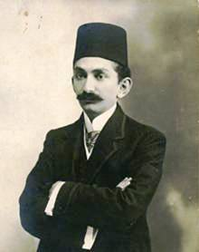

Prens Sabahaddin (1878-1948)

Prens Sabahaddin, liberal fikirleriyle dikkatleri çeken, liberalizmin Türkiye'ye giriþinde etkili olan Osmanlý aydýnlarýndandýr. Risale-i Nur açýsýndan önemi, onun "adem-i merkeziyet" ve "tevsi-i mezuniyet"e dair görüþlerine Bediüzzaman'ýn verdiði cevaptan kaynaklanýr. Ayrýca Prens'in akýl hocalýðý yaptýðý Ahrar Fýrkasý, Risale'nin siyaseti ele alýþýnda kullanýlan önemli örneklerden biridir.Sabahaddin'in annesi, II. Abdülhamit'in kýz kardeþi Seniha Sultan, babasý ise Mahmut Celaleddin Paþa'dýr. Hanedana yakýnlýðýndan dolayý "prens" lakabýyla anýldý. Bir Batýlý gibi eðitim gören Prens, babasý Mahmut Celaleddin Paþa ve Prens Lütfullah ile birlikte 1899'da Avrupa'ya kaçarak, Abdülhamit yönetimine karþý olanlarýn öncülerinden biri oldu. Bir süre babasýyla birlikte Mýsýr'da kaldýktan sonra Paris'e yerleþti.
Le Play'ýn kurduðu "Science Sociale" okulunun ileri gelenlerinden Edmond Demolins ile tanýþtý. Toplum ve siyaset hakkýndaki görüþlerini, teorilerini bu okulun ilkelerine dayandýrdý. Osmanlý toplumunun ilerleyebilmesi için "teþebbüs-ü þahsi" ve "adem-i merkeziyet" fikirlerine aðýrlýk veren Ýngiliz-Amerikan modelinin benimsenmesini savundu. Toplumun yapýsý deðiþtirilmediði için reform giriþimlerinin baþarýlý olamadýðýný; Osmanlý insanýnýn memur gibi deðil giriþimci gibi yetiþtirilmesini, eðitim sisteminin ferdiyetçiliði esas alan biçimde yeniden gözden geçirilmesini önerdi.
Onun yerel yönetimlerin yetkilerinin artýrýlmasýna dair görüþleri çok tartýþýldý. Bu tartýþma o günün þartlarýnda Sabahaddin'in deðiþik þekillerde suçlanmasýna neden oldu. Bu konuya dair bir mektup yayýnlayan Bediüzzaman Said Nursi, Sabahaddin'in yanlýþ anlaþýldýðýný yazdý. "Prens Sabahaddin Bey'in su-i telakki olunan güzel fikrine cevap" baþlýklý mektubunda fikirlerinin güzel olduðunu fakat ayrýlýkçý hareketlerin yoðun olduðu bir dönemde bu fikirlerin uygulanmasýnýn yanlýþ sonuçlar getireceðini, Osmanlý devletinin parçalanmasýný kolaylaþtýracaðýný belirtti. Ayrýca bu mektupta Sabahaddin'in siyaset ve eðitime dair görüþlerinin analizini yaptý. (Ýçtima-i Reçeteler-II, 253) "Adem-i merkeziyet" fikrinin uygulanabilmesi için Osmanlý devletinde yaþayan topluluklarýn "ayný kültür ve düþünce seviyesine" eriþmesi gerektiðini savunan Bediüzzaman, bu þartlarýn oluþmadan "adem-i merkeziyet" fikrinin uygulanmasýnýn zararlý sonuçlar doðuracaðýný savundu. Bunlarý dört baþlýk altýnda toplayabiliriz:
I- Merkezden nefret eden unsur ve milletlerde ayrýlýk fikirleri bütün bütün alevlenir; onlarý tatbike dökme imkaný bulurlar.
II- Bu ayrýlýk fikirlerinin tatbike dökülmesi sonunda, öyle bir vahþet doðar ki, "adem-i merkeziyet" ve "tevsi-i mezuniyet" fikri kabýna sýðmayýp patlar.
III- Oluþan bu vahþet, Osmanlýlýðýn ümit baðladýðý meþrutiyet perdesi üzerine öylesine bir baský yapacak ki, bu perde tazyike dayanamayýp yýkýlacaktýr. Bunun sonucu olarak da muhtariyete kapý açýlacak, sonra da istiklaliyete dönüþecektir.
IV- Daha sonra da krallýklar halinde sayýsýz küçük devletçikler oluþacaktýr. Bu devletçikler arasýnda bir rekabet hissi ve eþitsizliðin sonucu istila fikriyle keþmekeþ bir mücadele baþlayacaktýr.
Prens Sabahaddin, Avrupa'daki Türkleri II. Abdülhamit yönetimine karþý örgütlemek için babasý ve kardeþinin yardýmlarýyla 1902'de Paris'te Birinci Osmanlý liberalleri kongresini (Jön Türk kongresi) topladý. Ahmet Rýza Bey'in Terakki ve Ýttihat cemiyetine karþý Teþebbüs-ü Þahsi ve Adem-i Merkeziyet cemiyetini kurdu. Önce Meþveret gazetesinde, 1906'dan sonra da Terakki dergisinde görüþlerini yaymaya baþladý. Gizlice Türkiye'ye gönderilen dergi aydýnlar arasýnda etkili oldu.
Adem-i merkeziyete dair görüþlerinden dolayý Terakki ve Ýttihat grubu tarafýndan eleþtirildi.
Ahrar Fýrkasý programýnda Sabahaddin'in görüþlerine yer verdi. Görüþlerinden etkilenen gençler "Nesl-i Cedit" kulübünü kurdular (1908-1911). Hürriyet ve Ýtilaf fýrkasý da adem-i merkeziyet ve özel giriþimcilik görüþlerini savundu. Mahmut Þevket Paþa'nýn öldürülmesi olayýna adý karýþtýrýldýðý için yeniden Avrupa'ya kaçmak zorunda kaldý. 1918'de Ýstanbul'a döndü; yazýlarýyla Kurtuluþ savaþýný destekledi. 1924'te Osmanlý hanedaný yurtdýþýna çýkarýlýnca Ýsviçre'ye yerleþti. Orada yoksulluk içinde yaþadý. Ýsviçre Alplerinin yamacýndaki Colombier köyünde 1948'de vefat etti. Öldüðünde yastýðýnýn altýndan Türk bayraðý ve Kur'an-ý Kerim çýkmýþtý. 1952'de mezarý nakledilerek Eyüp mezarlýðýndaki babasý Mahmut Celaleddin Paþa'nýn kabri yanýna defnedildi. Cenazesinin üzerinde Ýsviçre hükümetinin þu kliþesi vardý: "Büyük Türk sosyolog ve vatanperveri Prens Mehmed Sabahaddin."
Eserleri:
Teþebbüs-ü Þahsi ve Tevsi-i Mezuniyet Hakkýnda Bir Ýzah. (1908)
Teþebbüs-ü Þahsi ve Adem-i Merkeziyet Hakkýnda Ýkinci Bir Ýzah.(1908)
Mesleðimiz Hakkýnda Üçüncü ve Son Bir Ýzah. (1911)
Türkiye Nasýl Kurtarýlabilir. (1918)